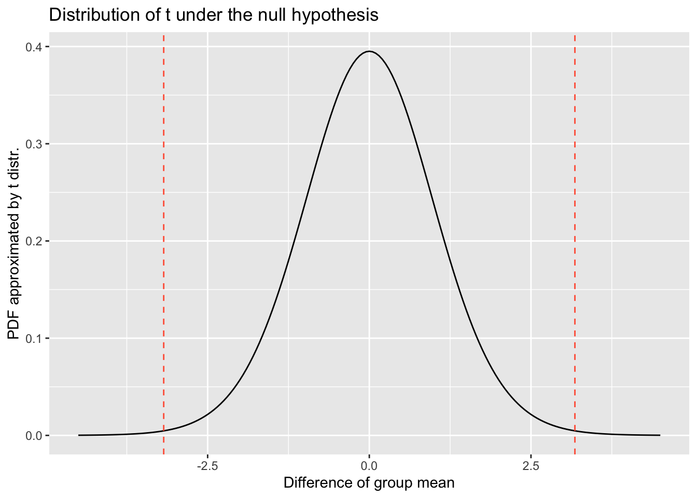
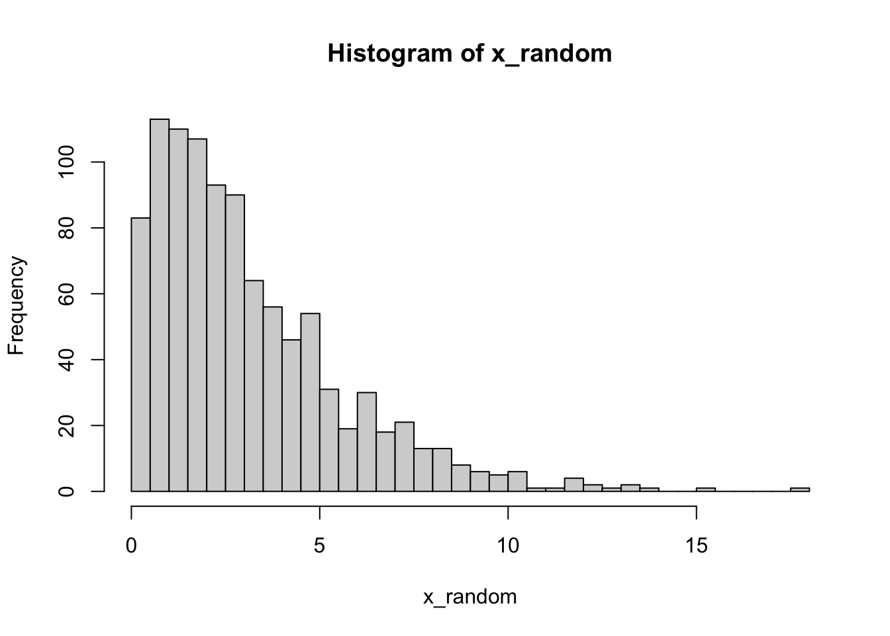

Chapter 4 Introduction to Hypothesis testing
4.1 Hypothesis testing and p value
How surprising is my result? Calculating a p-value
There are many circumstances where we simply want to check whether an observation looks like it is compatible with the null hypothesis, \(H_{0}\).
Having decided on a significance level \(\alpha\) and whether the situation warrants a one-tailed or a two-tailed test, we can use the cdf of the null distribution to calculate a p-value for the observation.
Acknowledgement: examples are from Dr John Pinney link here
4.1.1 Example 1: probability of rolling a six?
Your arch-nemesis Blofeld always seems to win at ludo, and you have started to suspect him of using a loaded die.
You observe the following outcomes from 100 rolls of his die:
data = c(6, 1, 5, 6, 2, 6, 4, 3, 4, 6, 1, 2, 5, 6, 6, 3, 6, 2, 6, 4, 6, 2,
5, 4, 2, 3, 3, 6, 6, 1, 2, 5, 6, 4, 6, 2, 1, 3, 6, 5, 4, 5, 6, 3,
6, 6, 1, 4, 6, 6, 6, 6, 6, 2, 3, 1, 6, 4, 3, 6, 2, 4, 6, 6, 6, 5,
6, 2, 1, 6, 6, 4, 3, 6, 5, 6, 6, 2, 6, 3, 6, 6, 1, 4, 6, 4, 2, 6,
6, 5, 2, 6, 6, 4, 3, 1, 6, 6, 5, 5)Do you have enough evidence to confront him?
# We will work with the binomial distribution for the observed number of sixes
# Write down the hypotheses
# H0: p = 1/6
# H1: p > 1/6
# choose a significance level
# alpha = 0.01# number of sixes
# number of trials
stat_k = sum(data == 6)
trials = length(data)
print(paste("number of sixes:", stat_k))## [1] "number of sixes: 43"print(paste("number of trials:", trials))## [1] "number of trials: 100"# test statistic: number of sixes out of 100 trials
# null distribution: dbinom(x, size=100, prob=1/6)
# calculate p value
p_val = 1 - pbinom(stat_k - 1, size=trials, prob=1/6)
print(paste("Observed statistic is", stat_k))## [1] "Observed statistic is 43"print(paste("p value is", p_val))## [1] "p value is 5.43908695860296e-10"4.1.1.1 Visualize the null distribution and the test statistic
# plot the probability mass function of null distribution
x = seq(0, 101)
pmf = dbinom(x, size=100, prob=1/6)
df = data.frame(x=x, pmf=pmf, extreme=(x >= stat_k))
library(ggplot2)
ggplot(df, aes(x=x)) +
geom_point(aes(y=pmf, color=extreme)) +
scale_color_manual(values=c("black", "red")) +
xlab('Number of sixes') +
ylab('Probability Mass Function') +
ggtitle('Distribution of n_six under the null hypothesis')
4.2 Permutation test
4.2.1 Example 2: difference in birth weight
The birth weights of babies (in kg) have been measured for a sample of mothers split into two categories: nonsmoking and heavy smoking.
- The two categories are measured independently from each other.
- Both come from normal distributions
- The two groups are assumed to have the same unknown variance.
data_heavysmoking = c(3.18, 2.84, 2.90, 3.27, 3.85, 3.52, 3.23, 2.76,
3.60, 3.75, 3.59, 3.63, 2.38, 2.34, 2.44)
data_nonsmoking = c(3.99, 3.79, 3.60, 3.73, 3.21, 3.60, 4.08, 3.61,
3.83, 3.31, 4.13, 3.26, 3.54)We want to know whether there is a significant difference in mean birth weight between the two categories.
# Write down the hypotheses
# H0: there is no difference in mean birth weight between groups: d == 0
# H1: there is a difference, d != 0
# choose a significance level
# alpha = 0.05# Define test statistic: difference of group mean
stat_mu = mean(data_heavysmoking) - mean(data_nonsmoking)
stat_mu## [1] -0.51569234.2.2 Null distribution approximated by resampling
#' Simple function to generate permutation distribution
get_permutation_null <- function(x1, x2, n_permute=1000) {
n1 = length(x1)
n2 = length(x2)
# pool data sets
x_pool = c(x1, x2)
null_distr = rep(0, n_permute)
for (i in seq(n_permute)) {
# split
idx = sample(n1 + n2, size=n1)
x1_perm = x_pool[idx]
x2_perm = x_pool[-idx]
# calculate test statistic
null_distr[i] = mean(x1_perm) - mean(x2_perm)
}
return(null_distr)
}set.seed(1)
perm_null = get_permutation_null(data_heavysmoking, data_nonsmoking)We can plot the histogram of the null distribution obtained by resampling. We can also add line(s) for the values as extreme as observed statistic mu, where we can consider one side or both side as extreme values.
df_perm = data.frame(perm_null = perm_null)
ggplot(df_perm, aes(x=perm_null)) +
geom_histogram(bins=20) +
geom_vline(xintercept=stat_mu, linetype="dashed", color="tomato") +
geom_vline(xintercept=-stat_mu, linetype="dashed", color="tomato") +
xlab('Difference of group mean') +
ylab('Resampling frequency') +
ggtitle('Distribution of mu under the null hypothesis')
## Two tailed p value
p_two_tailed = mean(abs(perm_null) >= abs(stat_mu))
p_one_tailed = mean(perm_null < stat_mu)
print(paste("Two tailed p value:", round(p_two_tailed, 5)))## [1] "Two tailed p value: 0.003"print(paste("One (left) tailed p value:", round(p_one_tailed, 5)))## [1] "One (left) tailed p value: 0.002"4.3 t test
4.3.1 Derivation of t distribution
Null distribution approximated by \(t\) distribution
We use the t test to assess whether two samples taken from normal distributions have significantly different means.
The test statistic follows a Students t-distribution, provided that the variances of the two groups are equal.
Other variants of the t-test are applicable under different conditions.
The test statistic is \[ t = \frac{\bar{X}_{1} - \bar{X}_{2}}{s_p \cdot \sqrt{\frac{1}{n_{1}} + \frac{1}{n_{2}}}} \]
where \[ s_p = \sqrt{\frac{(n_1 - 1)s_1^2 + (n_2 - 1)s_2^2}{n_1 + n_2 - 2}} \]
is an estimator of the pooled standard deviation.
Under the null hypothesis of equal means, the statistic follows a Students t-distribution with \((n_{1} + n_{2} - 2)\) degrees of freedom.
# Same test statistic: difference of group mean
stat_t = mean(data_heavysmoking) - mean(data_nonsmoking)
stat_t## [1] -0.5156923Calculate parameters for approximate t distribution
n_ns = length(data_nonsmoking)
n_hs = length(data_heavysmoking)
s_ns = sd(data_nonsmoking) # degree of freedom: n-1
s_hs = sd(data_heavysmoking)
# the pooled standard deviation
sp = sqrt(((n_ns - 1)*s_ns**2 + (n_hs - 1)*s_hs**2) / (n_ns + n_hs - 2))
print(paste0("Pooled standard deviation:", sp))## [1] "Pooled standard deviation:0.428057812829366"my_std = sp * sqrt(1/n_ns + 1/n_hs)
print(paste("Estimated standard error of mean difference:", my_std))## [1] "Estimated standard error of mean difference: 0.162204962956089"stat_t_scaled = stat_t / my_std
print(paste("Rescaled t statistic:", stat_t_scaled))## [1] "Rescaled t statistic: -3.17926343494134"print(paste("degree of freedom", n_hs+n_ns-2))## [1] "degree of freedom 26"Here, we focusing the standardized \(t\) distribution, namely the variance=1, so
lets re-scale the test statistic by dividing the standard error my_std.
xx = seq(-4.5, 4.5, 0.05)
xx_pdf = dt(xx, df=n_hs+n_ns-2)
df_t_dist = data.frame(x=xx, pdf=xx_pdf)
ggplot(df_t_dist, aes(x=x)) +
geom_line(aes(y=pdf)) +
geom_vline(xintercept=stat_t_scaled, linetype="dashed", color="tomato") +
geom_vline(xintercept=-stat_t_scaled, linetype="dashed", color="tomato") +
xlab('Difference of group mean') +
ylab('PDF approximated by t distr.') +
ggtitle('Distribution of t under the null hypothesis')
# Note, we used multiply 2 just because the t distribution is symmetric,
# otherwise, we need calculate both side and add them.
pval_t_twoside = pt(stat_t_scaled, df=n_hs+n_ns-2) * 2
print(paste('t-test p value (two-tailed):', round(pval_t_twoside, 6)))## [1] "t-test p value (two-tailed): 0.003793"4.3.2 Direct use of t.test()
In course and most of your future analyses, you can directly use the built-in
t.test() function.
# Note, we assumed the variance in both groups are the same,
# we so need to set var.equal = TRUE
t.test(data_nonsmoking, data_heavysmoking, var.equal = TRUE)##
## Two Sample t-test
##
## data: data_nonsmoking and data_heavysmoking
## t = 3.1793, df = 26, p-value = 0.003793
## alternative hypothesis: true difference in means is not equal to 0
## 95 percent confidence interval:
## 0.1822752 0.8491094
## sample estimates:
## mean of x mean of y
## 3.667692 3.1520004.4 GLM test
We can also perform t-test in a Generalised linear model (GLM) setting to test if a coefficient is zero or not.
Here, we simply use the marketing dataset as an example.
# Install datarium library if you haven't
if (!requireNamespace("datarium", quietly = TRUE)) {
install.packages("datarium")
}
library(datarium)
# Load data: then we will have a data.frame with name marketing
data(marketing)
head(marketing)## youtube facebook newspaper sales
## 1 276.12 45.36 83.04 26.52
## 2 53.40 47.16 54.12 12.48
## 3 20.64 55.08 83.16 11.16
## 4 181.80 49.56 70.20 22.20
## 5 216.96 12.96 70.08 15.48
## 6 10.44 58.68 90.00 8.64ggplot(marketing, aes(x=newspaper, y=sales)) +
geom_point() + geom_smooth(method=lm)## `geom_smooth()` using formula 'y ~ x'
# Fit linear regression
res.lm <- lm(sales ~ newspaper, data = marketing)
# We can check the test via the summary() function
summary(res.lm)##
## Call:
## lm(formula = sales ~ newspaper, data = marketing)
##
## Residuals:
## Min 1Q Median 3Q Max
## -13.473 -4.065 -1.007 4.207 15.330
##
## Coefficients:
## Estimate Std. Error t value Pr(>|t|)
## (Intercept) 14.82169 0.74570 19.88 < 2e-16 ***
## newspaper 0.05469 0.01658 3.30 0.00115 **
## ---
## Signif. codes: 0 '***' 0.001 '**' 0.01 '*' 0.05 '.' 0.1 ' ' 1
##
## Residual standard error: 6.111 on 198 degrees of freedom
## Multiple R-squared: 0.05212, Adjusted R-squared: 0.04733
## F-statistic: 10.89 on 1 and 198 DF, p-value: 0.001148glm_t_val = summary(res.lm)$coefficients["newspaper", "t value"]
xx = seq(-5, 5, 0.01)
yy = dt(xx, 198)
df_ttest <- data.frame(x=xx, PDF=yy)
ggplot(df_ttest, aes(x=x, y=PDF)) +
geom_line() +
geom_vline(xintercept = glm_t_val, linetype="dashed", color="tomato") +
geom_vline(xintercept = -glm_t_val, linetype="dashed", color='tomato')4.5 Multiple testing
Hypothetical null distribution. Feel feel to try any null distribution, examples below
## Example null distributions
# t, normal or anything. we use chi-squared distribution as an example
x_random = rchisq(n=1000, df=3)
any_null_dist = dchisq(x_random, df=3)
pvals_null = 1 - pchisq(x_random, df=3)4.5.1 Null distribution (of test statistic)
# Null distribution of test statistic
hist(x_random)

4.5.3 Minimal p values in 10 tests
# We use matrix to group 100 trials into a column
# We then use apply() to calculate min value for each column
pval_null_mtx = matrix(pvals_null, nrow=10)
p_min_in10 = apply(pval_null_mtx, MARGIN=2, FUN=min)hist(p_min_in10)
print(paste('Proportion of tests with min(p) < 0.05:', mean(p_min_in10 < 0.05)))## [1] "Proportion of tests with min(p) < 0.05: 0.43"4.5.4 Homework
- Make a simulation of score: group A and B
- B follows normal(mean=0, std=1); A follows normal(mean=0.1, std=1)
- Generate 100 samples for each group, and do a t test, is difference significant? Please use set.seed(0) beforehand.
- Try 3) again but general 3,00 samples this time, later 1,000 samples. What do you find? Think the relation between power and sample size.
set.seed(0)
n_sample = 100 # change this value to 1000 and 10000
xB = rnorm(n_sample)
xA = rnorm(n_sample, mean=0.1)
t.test(xA, xB, var.equal = TRUE)##
## Two Sample t-test
##
## data: xA and xB
## t = 0.24294, df = 198, p-value = 0.8083
## alternative hypothesis: true difference in means is not equal to 0
## 95 percent confidence interval:
## -0.2261882 0.2897482
## sample estimates:
## mean of x mean of y
## 0.05444844 0.02266845